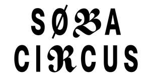
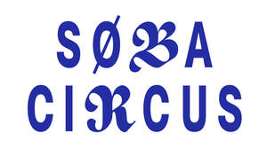

Trade Mark Journal No.2025/018 2 May 2025
UK00004190348 16 April 2025 (32,33)
Mark 1

Mark 2

- Class 32
- Beers; Mineral and aerated waters and other non-alcoholic beverages; non-alcoholic drinks; soft drinks; fruit drinks, fruit beverages and fruit juices; syrups and other preparations for making beverages; flavoured water and flavoured drinks; non-alcoholic mixers for combining with wines, spirits, liqueurs and cocktails; non-alcoholic beers; non-alcoholic cocktails; non- alcoholic cider; non-medicated vitamin drinks; non-medicated drinks containing nutrients; energy drinks [not for medical purposes]; sports drinks; isotonic drinks; nootropic drinks; nootropic beverages [not for medical purposes]; isotonic beverages [not for medical purposes]; non-alcoholic beverages including energy drinks, isotonic, hypertonic and hypotonic drinks; soft drinks for energy supply; sports drinks containing electrolytes; carbonated water; flavoured carbonated beverages; fruit flavoured carbonated drinks; non- alcoholic carbonated beverages; preparations for making carbonated water; energy drinks; energy drinks containing caffeine; concentrates for use in the preparation of energy drinks; beverages containing vitamins; energy drinks derived from natural ingredients; carbonated drinks containing natural ingredients; beverage products, namely CBD and CBD derivative- infused carbonated and non-carbonated beverages; hemp-based beverages; drinks and non-alcoholic cocktails containing effervescent tablets and effervescent powders; non- alcoholic beverages with seltzer water; seltzer water; nutritionally fortified beverages; beverages consisting principally of cannabidiol (CBD); beverages containing CBD; concentrates for use in the preparation of soft drinks; cordials (non-alcoholic beverages); energy drinks containing nootropics; essences for making beverages; frozen carbonated beverages; frozen fruit-based drinks; frozen fruit drinks; non-alcoholic beverages flavoured with tea; non-alcoholic beverages flavoured with coffee; powders for the preparation of beverages; protein drinks; protein-enriched sports beverages; smoothies [non-alcoholic fruit beverages]; vitamin enriched sparkling water [beverages]; vitamin fortified non-alcoholic beverages.
- Class 33
- Alcoholic beverages (except beer); preparations for making alcoholic beverages; wine; spirits; vodka; gin; whiskey; brandy; rum; tequila (GI) agave spirit drink; liqueurs; fortified wines; alcoholic cider; alcoholic cocktail mixes; alcoholic essences; bitters; alcoholic extracts; hot and mixed alcoholic drinks; alcoholic energy drinks; distilled beverages; pre- mixed alcoholic beverages, other than beer-based; alcoholic essences and extracts for making beverages; low alcoholic drinks; alcoholic fruit extracts; alcoholic beverages with seltzer water.
David Folkman
Representative: Trademark Tonic Limited